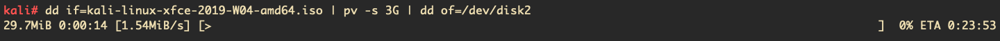

04 February 2019
In this post I will show you how to setup a Kali GNU/Linux Live system with persistence on a USB drive, so that you can carry it around anywhere and boot from it whenever you want to. The persistence feature will allow the system to be saved and persist through different boot-ups. As the official documentation suggests: ” (…) the preservation of data on the “Kali Live” USB drive — across reboots of “Kali Live”. This can be an extremely useful enhancement, and enables you to retain documents, collected testing results, configurations, etc., when running Kali Linux “Live” from the USB drive, even across different systems.”
I will be doing this on a MacBook Air (13-inch, Early 2014) with macOS Mojave 10.14.1 installed, so your mileage may vary on another system.
NOTE: You will notice that I have paid attention to use the correct form “GNU/Linux” through this article. See Linux and the GNU System by Richard Stallman for why this is an issue.
The full version of the Kali GNU/Linux ISO takes about 3GB, so theoretically any USB drive with larger capacity should work. I will be using a 16GB SanDisk.
You will need the .iso file of the Kali GNU/Linux variant you want to use. I recommend the XFCE version of the latest weekly build (the “official” releases can sometimes fall behind, which causes problems with the version of the included Linux kernel). The weekly build .iso files can be downloaded from here.
You can do the flashing with the built-in command dd,
but I have found balena
Etcher to be faster. Also dd is a bit dangerous to use,
you can overwrite crucial files if you are not careful.
After downloading the .iso file, it is always good practice
to check the shasum to avoid cases of files corrupted on
transfer. On the kali-weekly
download page, the file called SHA256SUMS contains the
SHA-256 codes for the
.iso files provided. You can check the SHA256SUM
of your downloaded .iso file with the command
shasum -a 256 YOUR_KALI.iso and compare it with the
checksum provided. In my case I am using the
kali-linux-xfce-2019-W04-amd64.iso file, and as you can
see, the checksums match.
~$ shasum -a 256 kali-linux-xfce-2019-W04-amd64.iso
b15508aaf84b30b7e606289f7e9524393c54798cde2011d0e24db57cde2e5fe6 kali-linux-xfce-2019-W04-amd64.iso
~$ cat sha256sums.txt
(...)
b15508aaf84b30b7e606289f7e9524393c54798cde2011d0e24db57cde2e5fe6 kali-linux-xfce-2019-W04-amd64.iso
(...)Now that we have ensured the integrity of the file, it is time to flash it. If you are using balena Etcher, all you have to do is select the .iso file and the USB to be flashed on the GUI.
If you are using dd, then you have to first identify
your USB drive. It is also recommended to do a sudo su
beforehand because most of the commands require root privileges.
diskutil list will show the disks attached to your
MacBook.
As you can see, I can identify my 16GB SanDisk USB as
/dev/disk2. Now that you know your disk’s path, you will
have to unmount it by diskutil unmountDisk /dev/disk2. We
can finally flash the .iso file. The dd command by
default by itself doesn’t have a progress bar, so if you want one you
will have to install pv on
your macOS by brew install pv. Using pv, we
can pipe the dd commands through it to monitor the
progress. The command
dd if=kali-linux-xfce-2019-W04-amd64.iso | pv -s 3G | dd of=/dev/disk2 bs=4m
will start flashing the iso file to your selected drive; and show you
a progress bar/ETA. BE VERY CAREFUL to enter the
correct paths to your .iso file and more importantly the target
disk. Also note that the -s 3G provides the file size to be
used in calculating the ETA. Finally, you can increase the batch
size bs to increase the speed, but I have found
bs=4m to be stable.

After the flash process is complete, you will boot to your USB by rebooting your MacBook. Make sure to hold the OPTION KEY - ⌥ while your computer is starting up to enter the Startup Manager. You will be presented with disks to boot from. The exact names on your screen might vary, but the Kali GNU/Linux USB is likely to be named EFI Boot.

Booting from your Kali GNU/Linux USB drive, you will be presented with the Kali boot up screen. From this screen choose Live system (persistence, check kali.org/prst).

On XFCE, you will presented with the login screen below. The
default user is root with the password toor;
so you can log in with those.

Now that you are booted up on Kali GNU/Linux Live, you will have to create a partition to put the persistence configuration files.
Start by opening up a Terminal and enter
parted,a program for
creating and manipulating partition tables. Enter
print devices to print out the disks attached to your
notebook (just like diskutil list). You will again have to
identify the attached USB disk (which we have just booted from). In my
case, it is /dev/sdb.

Enter select /dev/sdb to work on the USB drive (which
will helpfully print "Using /dev/sdb"). Enter
print to list the info about the drive.

As you can see, the Kali GNU/Linux .iso file takes about
3GB, while the rest is free space which we will use to store the
persistence data. Noting exactly where the second partition ends,
entering mkpart primary END_OF_PART_2 -1 will create a
partition filling up the rest of the drive. So in my case the command is
mkpart primary 3219 -1. Entering print again
will confirm that the partition is created. Enter quit to
exit parted.

Now that we have created the partition, we can finally setup
persistence. Noting the number of the partition we have just
created (which was 3 in my case), the command
mkfs.ext4 -L persistence /dev/sdb3 will create a EXT4
filesystem in the partition, and label it. The command
e2label /dev/sdb3 persistence will label the filesystem
again as persistence. (Make sure to replace
/dev/sdbX with your partition’s number in these
commands.)
As the last step, we will have to create a persistence.conf
file in the USB drive. To do so, you have to create a mounting point
with the command mkdir -p /mnt/kali. Then mount your
partition with the command mount /dev/sdb3 /mnt/kali. The
command echo "/ union" > /mnt/kali/persistence.conf will
create the config file containing the line “/ union”. You are
finally done! Upon reboot, you will have a ready-to-rock Kali GNU/Linux
Live system.
If you are using the Kali GNU/Linux Live system on a MacBook, you
will notice that the system will not automatically recognize the
built-in Wi-Fi driver. This because the Broadcom chip on your
MacBook has a proprietary driver which is not installed on Kali
GNU/Linux by default. If you want to be able to use the built-in Wi-Fi
driver, entering sudo apt install broadcom-sta-dkms will
download and install the driver. To remove possible conflictions with
other drivers, enter
modprobe -r b44 b43 b43legacy ssb brcmsmac. Finally, the
command modprobe wl should initialise the driver.
Fortunately the driver for the built-in Bluetooth chip on most
MacBooks is already installed by default. To enable Bluetooth
on a XFCE system, enter
sudo apt install bluetooth blueman. Then enter
/etc/init.d/bluetooth start to start the Bluetooth
service. The command blueman-manager will open the
Bluetooth manager so that you can connect your devices.
I would like to extend my gratitude towards the authors of the following website articles.
https://docs.kali.org/downloading/kali-linux-live-usb-persistence
https://kali.training/topic/adding-persistence-to-the-live-iso/
\space